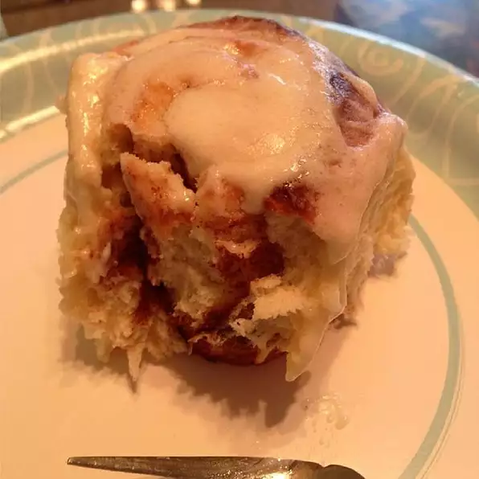

Cinnamon Rolls

Easy homemade cinnamon rolls using ingredients you already have at home!
This recipe allows us to skip the first rise, meaning it is fast, and easy to do all in one night.
Makes 12 cinnamon rolls, and takes 1 hr 20 minutes to complete.
Ingredients
- 1 cup milk
- 1/3 cup butter
- 2 eggs, room temperature
- 4 cups bread flour, divided
- 1/2 cup white sugar
- 2 1/2 teaspoons rapid-rise yeast
- 1 teaspoon salt
- 1 teaspoon vegetable oil
- 3/4 cup packed brown sugar
- 2 1/2 tablespoons ground cinnamon
- 1/3 cup butter, softened
Steps
- Heat milk and uhh... just get it to 120-130 degrees
- Whisk eggs, adding small amounts of milk, then pour mixture into the bowl of a stand mixer
- Mix 3 cups flour, sugar, yeast, salt in a large bowl. Add to milk mixture and beat on slow speed using dough hook
- Add remaining flour slowly, 1 tablespoon at a time, until dough begins to ball up. Knead until dough looks smooth, 7-10 minutes
- Pour vegetable oil over dough and turn to coat. Cover and let rest for 10 minutes.
- Turn dough out onto a lightly floured surface, and beat it into a rectable
- Mix brown sugar and cinnamon in a small bowl. Spread the softened butter on the dough, then sprinkle the cinnasugar onto it. Cut into 12 pieces
- Place rolls, cut-side down and almost touching, into a pan and cover, let rise until doubled, 30-40 minutes
- Preheat the over to 400 degs Fs
- Bake until golden, 15-20 minutes. Remove from oven and turn out onto tray or plate. Cover with frosting of choice